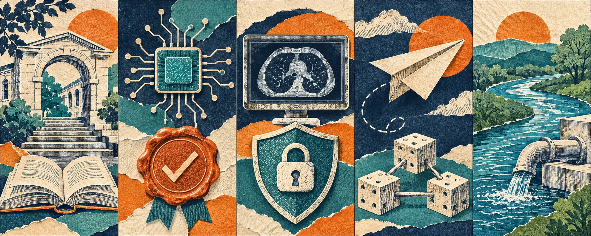

Independent daily digestFive stories worth your time
The Daily Curiosity
Progress depends on the systems underneath it. Today: support that helps students finish, proof behind an AI response, safer medical software, a flying laboratory built for change, and the everyday infrastructure that protects New York’s water.
AI-generated editorial illustration · The Daily Curiosity. Symbolic artwork, not documentary imagery or a technical diagram.
STORY 01 · Higher education · SUNY
SUNY joins a national effort to turn enrollment into completion

AI-generated editorial illustration · The Daily Curiosity. Symbolic artwork, not documentary imagery or a technical diagram.
SUNY announced November 2 that it is joining the National Student Success Project, a collaboration organized by five national higher-education associations. The effort centers on affordable routes to graduation, educational value, academic innovation, career preparation and civil dialogue, with several SUNY campuses participating alongside system administration. SUNY connects the commitment to existing supports such as advising, textbook and transportation assistance, and experiential learning. The useful test will be whether sharing practices helps institutions remove obstacles between starting college and finishing a degree; joining the project is a commitment, not evidence of a new completion gain.
Source published 2026-11-02 · Briefing date 2026-11-05
An AI answer could come with proof of which model made it
AI-generated editorial illustration · The Daily Curiosity. Symbolic artwork, not documentary imagery or a technical diagram.
Anthropic has released FlashProve, an open-source research prototype that produces cryptographic evidence linking a response to a particular committed set of model weights without revealing those weights. That could help customers and evaluators detect model substitution or altered responses instead of relying on a provider’s label. The company reports a substantial cost in its test configuration: generating proofs required about 70–95 times the GPU time of the comparison inference run. The work verifies the relationship between a computation and a model, rather than proving the answer is true, and Anthropic describes it as intermediate research progress.
Source published 2026-11-02 · Briefing date 2026-11-05
Medical-imaging software fixes put the update path under scrutiny
AI-generated editorial illustration · The Daily Curiosity. Symbolic artwork, not documentary imagery or a technical diagram.
CERT/CC reports two code-execution vulnerabilities in INFINITT PACS System Manager versions 3.0.11.3 and 3.0.11.5, software used with an enterprise medical-imaging platform. One involves a locally modifiable update file; the other involves unsafe handling of an application link that a user is persuaded to open. The November 2 advisory identifies versions 3.0.12.3 and 3.0.12.5 as fixes and recommends updating as soon as operationally feasible. CERT/CC says there are no indications of exploitation, making this a patch-planning story rather than a reported hospital breach—and a reminder that supporting utilities belong in the software inventory.
Source published 2026-11-02 · Briefing date 2026-11-05
NASA’s next flying laboratory is designed to change between experiments
AI-generated editorial illustration · The Daily Curiosity. Symbolic artwork, not documentary imagery or a technical diagram.
NASA unveiled the X-70 Fractal on November 4 as a crewed experimental aircraft intended to test advanced flight controls and other aviation technologies. The agency describes rapidly reconfigurable controls and room for up to 2,000 pounds of experimental equipment inside and outside the aircraft. The appeal is a reusable research platform whose payloads can change between investigations, expanding the kinds of experiments NASA can take into real flight. NASA expects its first flight under the agency’s banner within two years, so the announcement is a research-platform plan rather than confirmation of a completed NASA flight.
Source published 2026-11-04 · Briefing date 2026-11-05
Cleaner water starts with sewers, streambanks—and snowplows
AI-generated editorial illustration · The Daily Curiosity. Symbolic artwork, not documentary imagery or a technical diagram.
New York’s DEC highlighted more than $34 million in recently awarded grants for 25 Western New York water-quality projects in a November 5 regional update. The awards include $10 million for a biological wastewater-treatment upgrade in Niagara Falls and $10 million for a sewer system along Chautauqua Lake’s northeast shore. Smaller projects include better salt storage and snowplow blades intended to reduce road-salt use, showing how water protection reaches beyond treatment plants. These are funded improvements with intended benefits, not a declaration that construction is finished or water-quality gains have already been measured.
Source published 2026-11-05 · Briefing date 2026-11-05